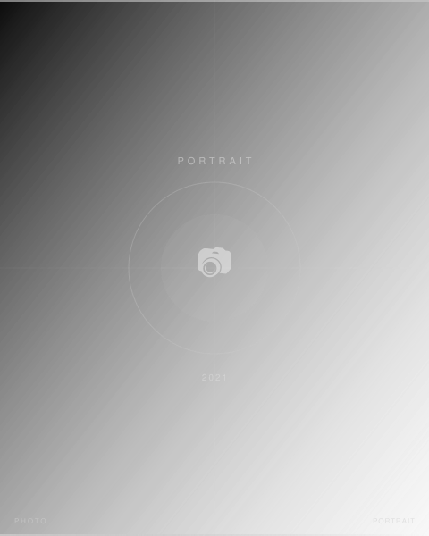

2021 / PORTRAIT / FASHION
Yohji Yamamoto × 黒田萌音 白ホリスタジオポートレート
Personal Work / Studio Shoot
Yohji Yamamotoを着た黒田萌音さんを白ホリスタジオで撮影。背景をグラデーション（白→黒）で構成し、ブランドの黒の美しさを引き出した作品。六本木のレンズマンスタジオにて、ライティングの精度を追求した試み。白ホリドットコム「白ホリストーリーズ」掲載作品。
担当：スチール撮影 / ライティング設計 / デジタル現像
Leica SL2, APO-SUMMICRON-SL 75mm f/2 ASPH.
- Photographer
- 森川亮太 (M.RYOHTA / @m_ichirinka)
- Model
- 黒田萌音 (@mooonene)
- Studio
- レンズマン 六本木
Instagram: @m_ichirinka (2021.04.10) ↗

